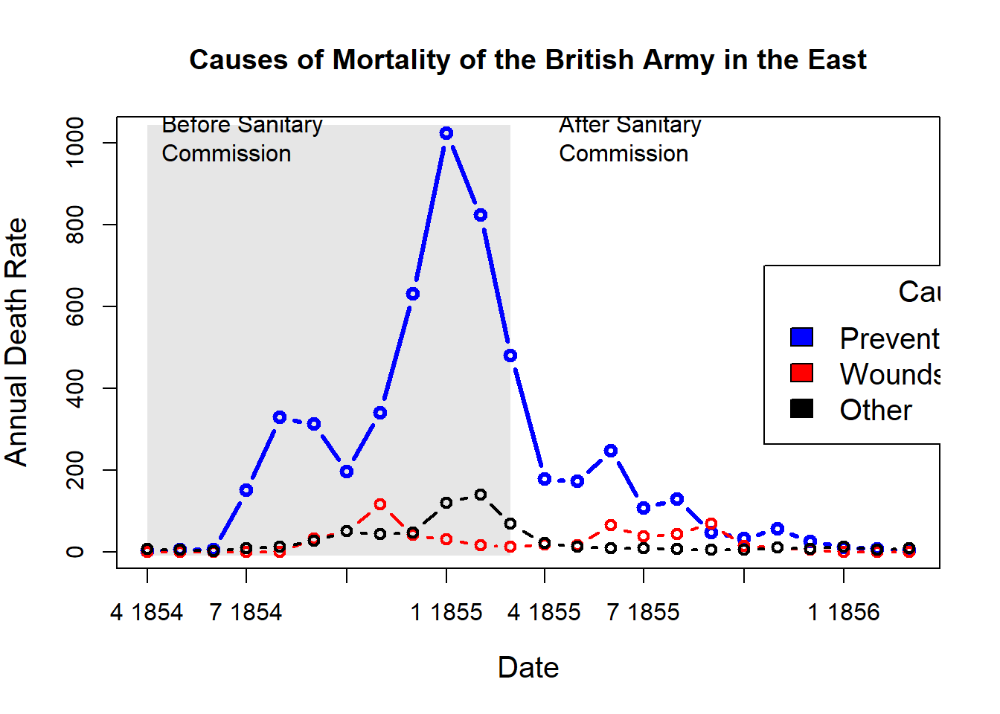

Chapter: 2 R及びRStudioのインストール
2.1 インストールを始める前に
思いつく順にいくつか注意点をまとめてみました。
- プログラミングを始めるということは、マウスをあまり使わない世界に足を踏み入れること。
- 一つ一つの作業が文字として残るので、作業の再現性が高まります。
- クリックして探していたファイルを「パス(path)」という「住所」を示すことでパソコンに伝えることになります。
- 全角入力(日本語入力：原則コメント欄のみ)と半角入力(英数字入力)の違いをいつも意識する。
- １２３４５は全角文字です。
- 12345は半角文字です。
- 1と１は区別がつきにくいですが、全角文字はプログラミングコードには使用できません。
- 変数やフォルダの名前をつける際に、スペースを入れることはトラブルのもとなのでなるべくスペースを含む名前はつけない。
- ちなみに、スペースの半角と全角は肉眼ではまず区別できません。
Rは大文字と小文字を区別する言語（プログラミング言語によっては区別しないものもある）。- 頻出する「フォルダ」と「ディレクトリ」は、ほぼ同じ意味と考えて良い。
Rはインターネットアクセスのあるところで利用することでその真価を発揮できる。- 学内の無線LANにはすぐにアクセスできる状態にしておきましょう。
2.2 Rのインストール
Rを利用する上で最大の難関がRのインストールです。幸い、高知工科大学の矢内勇生先生が大変わかりやすいインストールガイドを作成してくださっています。自分の使っているマシンに応じて以下のいずれかの資料を参照してインストールを進めましょう。
Rのインストールは環境によっては非常に簡単です。本講義の学生にとって、矢内先生のマニュアルに沿ってインストールすることが重要なのは、多くの学生が日本語版のウィンドウズかMacOSを使用しているためです。Rが利用するディレクトリなどに、半角英数以外の名前(日本語など）が使用されていると大きな問題を引き起こすことがあります。
上記のインストールガイドに書いてあることを順番に一つずつ実行すれば必ず成功します。ただし、以下はガイドのうち、とばしてもらっても大丈夫なものです。
- ウィンドウズユーザー
- プログラミング用のフォントの話題
- Rtoolsのインストール
- RStudioのカスタマイズ
- Macユーザー
- RStudioのカスタマイズ
この作業にはダウンロードなども含めて大変時間がかかります。2回分の講義時間をとってありますので、じっくり腰を据えておこないましょう。
2.3 RStudioのインストール
こちらはRのインストールに比べるとかなり楽に行うことができます。必ず先にR本体をインストールしてから、RStudioをインストールしてください。
- Windows版のガイドでは、P82からがRStudioのインストールガイドです。
- MacOS版のガイドでは、P34からがRStudioのインストールガイドです。
2.4 統計とデータの可視化
現代ではPCの計算能力の向上や身近な道具になったこと、データの蓄積と利活用への理解などがあり、誰でも分析が可能になりました。かつてはデータを集めること、分析することのハードルが今より高かったわけですが有用性は今と変わらず、むしろ説得材料として非常に効果的だったと思われます。
その一つの事例としてナイチンゲールの鶏頭図があります。
## ── Attaching core tidyverse packages ──────────────────────── tidyverse 2.0.0 ──
## ✔ dplyr 1.1.1 ✔ readr 2.1.4
## ✔ forcats 1.0.0 ✔ stringr 1.5.0
## ✔ ggplot2 3.4.2 ✔ tibble 3.2.1
## ✔ lubridate 1.9.2 ✔ tidyr 1.3.0
## ✔ purrr 1.0.2
## ── Conflicts ────────────────────────────────────────── tidyverse_conflicts() ──
## ✖ dplyr::filter() masks stats::filter()
## ✖ dplyr::lag() masks stats::lag()
## ℹ Use the conflicted package (<http://conflicted.r-lib.org/>) to force all conflicts to become errorslibrary(HistData)
data(Nightingale)
# For some graphs, it is more convenient to reshape death rates to long format
# keep only Date and death rates
#require(reshape)
#Night<- Nightingale[,c(1,8:10)]
#melted <- melt(Night, "Date")
#names(melted) <- c("Date", "Cause", "Deaths")
#melted$Cause <- sub("\\.rate", "", melted$Cause)
#melted$Regime <- ordered( rep(c(rep('Before', 12), rep('After', 12)), 3),
# levels=c('Before', 'After'))
#Night <- melted
Night <- Nightingale |>
select(Date,Disease.rate:Other.rate) |>
pivot_longer(!Date,names_to = "Cause",values_to = "Deaths") |>
mutate(Date=ymd(Date),
Cause=str_replace(Cause,"\\.rate", ""),
Regime=case_when(Date>=1855-04-01~"After",TRUE~"Before"))
# subsets, to facilitate separate plotting
Night1 <- subset(Night, Date < as.Date("1855-04-01"))
Night2 <- subset(Night, Date >= as.Date("1855-04-01"))
# sort according to Deaths in decreasing order, so counts are not obscured [thx: Monique Graf]
Night1 <- Night1[order(Night1$Deaths, decreasing=TRUE),]
Night2 <- Night2[order(Night2$Deaths, decreasing=TRUE),]
# merge the two sorted files
Night <- rbind(Night1, Night2)
require(ggplot2)
# Before plot
cxc1 <- ggplot(Night1, aes(x = factor(Date), y=Deaths, fill = Cause)) +
# do it as a stacked bar chart first
geom_bar(width = 1, position="identity", stat="identity", color="black") +
# set scale so area ~ Deaths
scale_y_sqrt()
# A coxcomb plot = bar chart + polar coordinates
cxc1 + coord_polar(start=3*pi/2) +
ggtitle("Causes of Mortality in the Army in the East") +
xlab("")
# After plot
cxc2 <- ggplot(Night2, aes(x = factor(Date), y=Deaths, fill = Cause)) +
geom_bar(width = 1, position="identity", stat="identity", color="black") +
scale_y_sqrt()
cxc2 + coord_polar(start=3*pi/2) +
ggtitle("Causes of Mortality in the Army in the East") +
xlab("")## Not run:
# do both together, with faceting
cxc <- ggplot(Night, aes(x = factor(Date), y=Deaths, fill = Cause)) +
geom_bar(width = 1, position="identity", stat="identity", color="black") +
scale_y_sqrt() +
facet_grid(. ~ Regime, scales="free", labeller=label_both)
cxc + #coord_polar(start=3*pi/2) +
ggtitle("Causes of Mortality in the Army in the East") +
xlab("")## End(Not run)
## What if she had made a set of line graphs?
# these plots are best viewed with width ~ 2 * height
colors <- c("blue", "red", "black")
with(Nightingale, {
plot(Date, Disease.rate, type="n", cex.lab=1.25,
ylab="Annual Death Rate", xlab="Date", xaxt="n",
main="Causes of Mortality of the British Army in the East");
# background, to separate before, after
rect(as.Date("1854/4/1"), -10, as.Date("1855/3/1"),
1.02*max(Disease.rate), col=gray(.90), border="transparent");
text( as.Date("1854/4/1"), .98*max(Disease.rate), "Before Sanitary\nCommission", pos=4);
text( as.Date("1855/4/1"), .98*max(Disease.rate), "After Sanitary\nCommission", pos=4);
# plot the data
points(Date, Disease.rate, type="b", col=colors[1], lwd=3);
points(Date, Wounds.rate, type="b", col=colors[2], lwd=2);
points(Date, Other.rate, type="b", col=colors[3], lwd=2)
}
)
# add custom Date axis and legend
axis.Date(1, at=seq(as.Date("1854/4/1"), as.Date("1856/3/1"), "3 months"), format="%b %Y")
legend(as.Date("1855/10/20"), 700, c("Preventable disease", "Wounds and injuries", "Other"),
col=colors, fill=colors, title="Cause", cex=1.25)
# Alternatively, show each cause of death as percent of total
Nightingale <- within(Nightingale, {
Total <- Disease + Wounds + Other
Disease.pct <- 100*Disease/Total
Wounds.pct <- 100*Wounds/Total
Other.pct <- 100*Other/Total
})
colors <- c("blue", "red", "black")
with(Nightingale, {
plot(Date, Disease.pct, type="n", ylim=c(0,100), cex.lab=1.25,
ylab="Percent deaths", xlab="Date", xaxt="n",
main="Percentage of Deaths by Cause");
# background, to separate before, after
rect(as.Date("1854/4/1"), -10, as.Date("1855/3/1"),
1.02*max(Disease.rate), col=gray(.90), border="transparent");
text( as.Date("1854/4/1"), .98*max(Disease.pct), "Before Sanitary\nCommission", pos=4);
text( as.Date("1855/4/1"), .98*max(Disease.pct), "After Sanitary\nCommission", pos=4);
# plot the data
points(Date, Disease.pct, type="b", col=colors[1], lwd=3);
points(Date, Wounds.pct, type="b", col=colors[2], lwd=2);
points(Date, Other.pct, type="b", col=colors[3], lwd=2)
}
)
# add custom Date axis and legend
axis.Date(1, at=seq(as.Date("1854/4/1"), as.Date("1856/3/1"), "3 months"), format="%b %Y")
legend(as.Date("1854/8/20"), 60, c("Preventable disease", "Wounds and injuries", "Other"),
col=colors, fill=colors, title="Cause", cex=1.25)